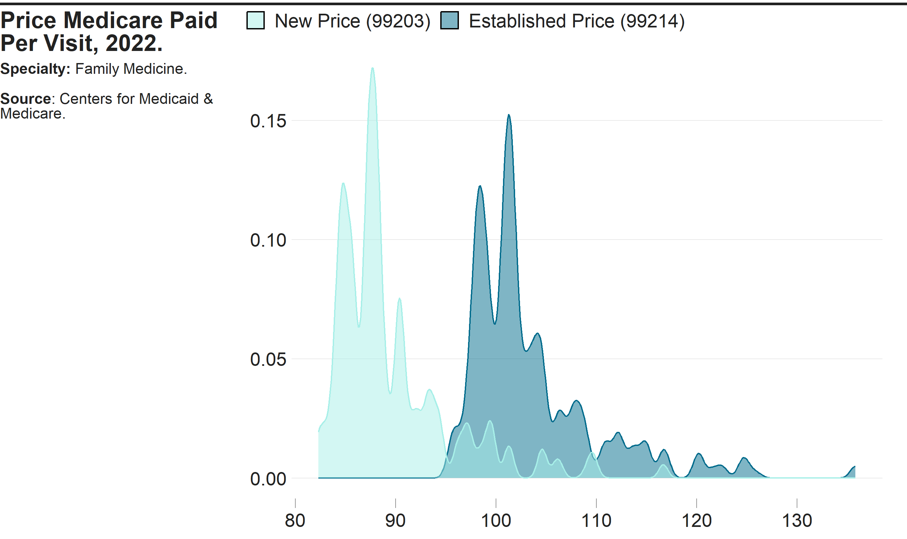
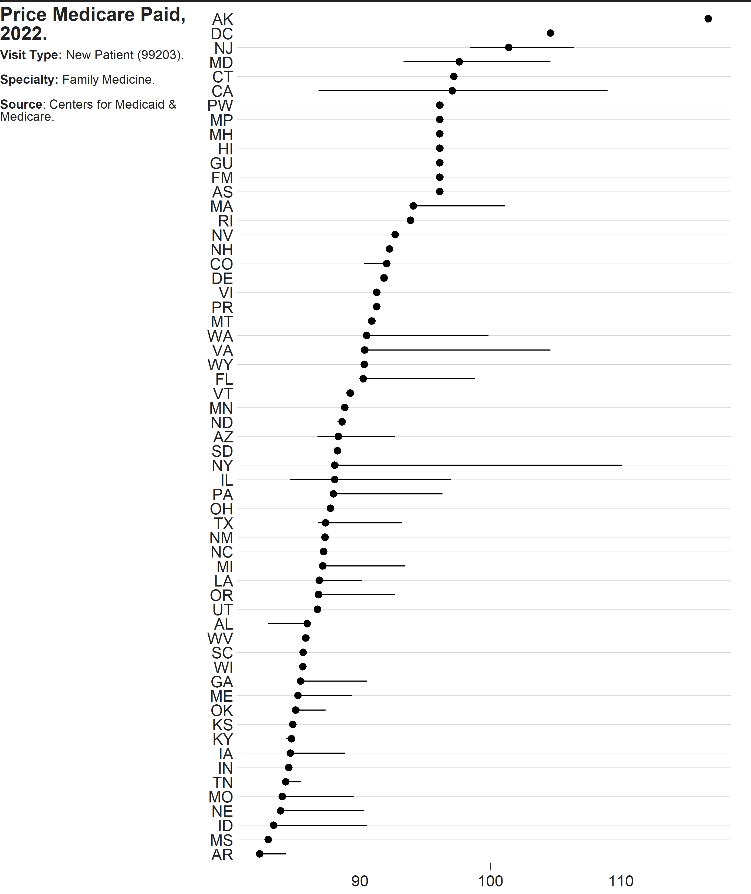
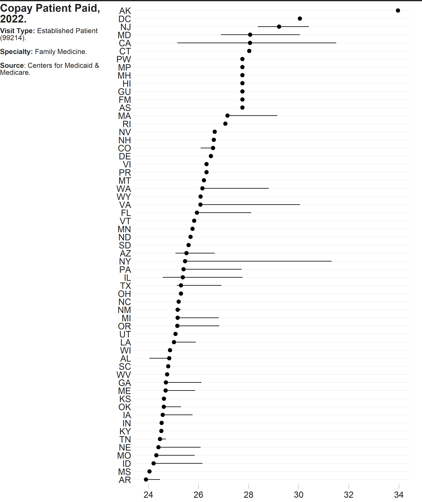

The costoffice package contains functions enabling the user to access the latest Physician Office Visit Costs datasets from Data.CMS.gov.
There are 83 datasets in total, each representing a different medical specialty.
Broken down by ZIP code, they contain the:
- Most Utilized HCPCS Level II Procedure Code (for both New and Established patients)
- Price Medicare Paid for the Visit (Min-Mode-Max)
- Copay the Patient Paid for the Visit (Min-Mode-Max)
Installation
You can install the development version of costoffice from GitHub with:
# install.packages("devtools")
devtools::install_github("andrewallenbruce/costoffice", build_vignettes = TRUE)
# install.packages("remotes")
remotes::install_github("andrewallenbruce/costoffice", build_vignettes = TRUE)
search_datasets()
Returns a data frame of each dataset’s medical specialty, date of most recent release, and a download link for it’s corresponding csv file:
# Call with no arguments to return the entire data frame
search_datasets()#> # A tibble: 83 × 3
#> specialty released csv_url
#> <chr> <date> <chr>
#> 1 addiction_medicine 2022-07-14 https://data.cms…
#> 2 advanced_heart_failure_and_transplant_cardiology 2022-07-14 https://data.cms…
#> 3 allergy_immunology 2022-07-14 https://data.cms…
#> 4 anesthesiology 2022-07-14 https://data.cms…
#> 5 cardiac_surgery 2022-07-14 https://data.cms…
#> 6 cardiology 2022-07-14 https://data.cms…
#> 7 certified_clinical_nurse_specialist 2022-07-14 https://data.cms…
#> 8 certified_nurse_midwife 2022-07-14 https://data.cms…
#> 9 certified_registered_nurse_anesthetist_crna 2022-07-14 https://data.cms…
#> 10 clinic_or_group_practice 2022-07-14 https://data.cms…
#> # ℹ 73 more rowsIf needed, there are two arguments to this function. Use the specialty argument to return only exact matches (note the underscore in the names):
search_datasets(specialty = "emergency_medicine")#> # A tibble: 1 × 3
#> specialty released csv_url
#> <chr> <date> <chr>
#> 1 emergency_medicine 2022-07-14 https://data.cms.gov/provider-data/sites/defaul…Use the keyword argument to return partial matches:
search_datasets(keyword = "medicine")#> # A tibble: 12 × 3
#> specialty released csv_url
#> <chr> <date> <chr>
#> 1 addiction_medicine 2022-07-14 https://data.cms.gov/provide…
#> 2 emergency_medicine 2022-07-14 https://data.cms.gov/provide…
#> 3 geriatric_medicine 2022-07-14 https://data.cms.gov/provide…
#> 4 internal_medicine 2022-07-14 https://data.cms.gov/provide…
#> 5 nuclear_medicine 2022-07-14 https://data.cms.gov/provide…
#> 6 osteopathic_manipulative_medicine 2022-07-14 https://data.cms.gov/provide…
#> 7 pediatric_medicine 2022-07-14 https://data.cms.gov/provide…
#> 8 physical_medicine_and_rehabilitation 2022-07-14 https://data.cms.gov/provide…
#> 9 preventive_medicine 2022-07-14 https://data.cms.gov/provide…
#> 10 sleep_medicine 2022-07-14 https://data.cms.gov/provide…
#> 11 sports_medicine 2022-07-14 https://data.cms.gov/provide…
#> 12 undersea_and_hyperbaric_medicine 2022-07-14 https://data.cms.gov/provide…Return a vector of the exact names of the medical specialties by simply calling
search_datasets()$specialty:
Available Medical Specialties
addiction_medicine
advanced_heart_failure_and_transplant_cardiology
allergy_immunology
anesthesiology
cardiac_surgery
cardiology
certified_clinical_nurse_specialist
certified_nurse_midwife
certified_registered_nurse_anesthetist_crna
clinic_or_group_practice
clinical_cardiac_electrophysiology
clinical_laboratory
colorectal_surgery_proctology
critical_care_intensivists
dentist
dermatology
diagnostic_radiology
emergency_medicine
endocrinology
family_practice
gastroenterology
general_practice
general_surgery
geriatric_medicine
geriatric_psychiatry
gynecological_oncology
hand_surgery
hematology
hematology_oncology
hematopoietic_cell_transplantation_and_cellular_therapy
hospice_and_palliative_care
hospitalist
infectious_disease
internal_medicine
interventional_cardiology
interventional_pain_management
interventional_radiology
licensed_clinical_social_worker
mammography_center
maxillofacial_surgery
medical_genetics_and_genomics
medical_oncology
medical_toxicology
nephrology
neurology
neuropsychiatry
neurosurgery
nuclear_medicine
nurse_practitioner
obstetrics_gynecology
ophthalmology
optometry
oral_surgery_dentist_only
orthopedic_surgery
osteopathic_manipulative_medicine
otolaryngology
pain_management
pathology
pediatric_medicine
peripheral_vascular_disease
physical_medicine_and_rehabilitation
physical_therapist_in_private_practice
physician_assistant
plastic_and_reconstructive_surgery
podiatry
preventive_medicine
psychiatry
psychologist_clinical
public_health_or_welfare_agency
pulmonary_disease
radiation_oncology
registered_dietitian_or_nutrition_professional
rheumatology
sleep_medicine
speech_language_pathologist
sports_medicine
surgical_oncology
thoracic_surgery
undefined_physician_type
undersea_and_hyperbaric_medicine
unknown_supplierprovider_specialty
urology
vascular_surgeryExample: Overview
dir <- "E:/costoffice_data/costoffice_2022_raw_data/"
paths <- list.files(dir, pattern = "[.]csv$", full.names = TRUE)
names <- basename(paths)
out <- gsub(".csv", ".rds", names)
outdir <- "E:/costoffice_data/costoffice_2022_clean_data/"
df_specialty <- out |>
purrr::map(\(x) costoffice:::summarise_by_specialty(dir = outdir, name = x)) |>
purrr::list_rbind()
df_state <- out |>
purrr::map(\(x) costoffice:::summarise_by_state(dir = outdir, name = x)) |>
purrr::list_rbind()
df_spec_state <- out |>
purrr::map(\(x) costoffice:::summarise_by_spec_state(dir = outdir, name = x)) |>
purrr::list_rbind()Summary by Specialty
df_specialty#> # A tibble: 332 × 9
#> specialty type n min avg_min avg_mode avg_max max avg_range
#> <chr> <chr> <int> <dbl> <dbl> <dbl> <dbl> <dbl> <dbl>
#> 1 Addiction Medicine Esta… 43530 4.06 4.06 25.9 4.06 47.7 31.7
#> 2 Addiction Medicine Esta… 43530 16.3 16.3 104. 16.3 191. 127.
#> 3 Addiction Medicine New … 43530 13.3 13.3 33.6 13.3 58.4 29.8
#> 4 Addiction Medicine New … 43530 53.1 53.1 134. 53.1 234. 119.
#> 5 Advanced Heart Fa… Esta… 43530 4.06 4.06 25.9 4.06 47.7 31.7
#> 6 Advanced Heart Fa… Esta… 43530 16.3 16.3 104. 16.3 191. 127.
#> 7 Advanced Heart Fa… New … 43530 13.3 13.3 33.6 13.3 58.4 29.8
#> 8 Advanced Heart Fa… New … 43530 53.1 53.1 134. 53.1 234. 119.
#> 9 Allergy Immunology Esta… 43530 4.06 4.06 18.2 4.06 47.7 31.7
#> 10 Allergy Immunology Esta… 43530 16.3 16.3 73.0 16.3 191. 127.
#> # ℹ 322 more rows
table(df_specialty$specialty, df_specialty$type) |>
as.data.frame() |>
dplyr::tibble() |>
dplyr::select(specialty = Var1,
type = Var2,
count = Freq) |>
dplyr::group_by(type) |>
dplyr::summarise(count = sum(count)) |>
dplyr::arrange(dplyr::desc(count))#> # A tibble: 16 × 2
#> type count
#> <fct> <int>
#> 1 Established Copay (99214) 41
#> 2 Established Price (99214) 41
#> 3 Established Copay (99213) 39
#> 4 Established Price (99213) 39
#> 5 New Copay (99204) 32
#> 6 New Price (99204) 32
#> 7 New Copay (99203) 29
#> 8 New Price (99203) 29
#> 9 New Copay (99205) 18
#> 10 New Price (99205) 18
#> 11 New Copay (NA) 4
#> 12 New Price (NA) 4
#> 13 Established Copay (99211) 2
#> 14 Established Price (99211) 2
#> 15 Established Copay (99215) 1
#> 16 Established Price (99215) 1Summary by State
df_state#> # A tibble: 19,920 × 9
#> state type n min avg_min avg_mode avg_max max avg_range
#> <chr> <chr> <int> <dbl> <dbl> <dbl> <dbl> <dbl> <dbl>
#> 1 AK Established Copay… 282 5.59 5.59 34.0 5.59 47.7 42.1
#> 2 AK Established Price… 282 22.4 22.4 136. 22.4 191. 168.
#> 3 AK New Copay (99204) 282 18.7 18.7 44.1 18.7 58.4 39.7
#> 4 AK New Price (99204) 282 74.8 74.8 176. 74.8 234. 159.
#> 5 AL Established Copay… 859 4.06 4.06 24.8 4.06 34.8 30.5
#> 6 AL Established Price… 859 16.3 16.3 99.3 16.3 139. 122.
#> 7 AL New Copay (99204) 859 13.4 13.4 32.3 13.4 42.7 28.8
#> 8 AL New Price (99204) 859 53.5 53.5 129. 53.5 171. 115.
#> 9 AR Established Copay… 738 4.07 4.07 23.9 4.07 34.2 29.4
#> 10 AR Established Price… 738 16.3 16.3 95.6 16.3 137. 118.
#> # ℹ 19,910 more rows
table(df_state$state, df_state$type) |>
as.data.frame() |>
dplyr::tibble() |>
dplyr::select(state = Var1,
type = Var2,
count = Freq) |>
dplyr::group_by(type) |>
dplyr::summarise(count = sum(count)) |>
dplyr::arrange(dplyr::desc(count))#> # A tibble: 16 × 2
#> type count
#> <fct> <int>
#> 1 Established Copay (99214) 2419
#> 2 Established Price (99214) 2419
#> 3 Established Copay (99213) 2301
#> 4 Established Price (99213) 2301
#> 5 New Copay (99204) 1888
#> 6 New Price (99204) 1888
#> 7 New Copay (99203) 1711
#> 8 New Price (99203) 1711
#> 9 New Copay (99205) 1062
#> 10 New Price (99205) 1062
#> 11 New Copay (NA) 236
#> 12 New Price (NA) 236
#> 13 Established Copay (99211) 118
#> 14 Established Price (99211) 118
#> 15 Established Copay (99215) 59
#> 16 Established Price (99215) 59Summary by Specialty & State
df_spec_state#> # A tibble: 19,920 × 10
#> specialty state type zip_codes min avg_min avg_mode avg_max max
#> <chr> <chr> <chr> <int> <dbl> <dbl> <dbl> <dbl> <dbl>
#> 1 Addiction Medicine AK Esta… 282 5.59 5.59 34.0 5.59 47.7
#> 2 Addiction Medicine AK Esta… 282 22.4 22.4 136. 22.4 191.
#> 3 Addiction Medicine AK New … 282 18.7 18.7 44.1 18.7 58.4
#> 4 Addiction Medicine AK New … 282 74.8 74.8 176. 74.8 234.
#> 5 Addiction Medicine AL Esta… 859 4.06 4.06 24.8 4.06 34.8
#> 6 Addiction Medicine AL Esta… 859 16.3 16.3 99.3 16.3 139.
#> 7 Addiction Medicine AL New … 859 13.4 13.4 32.3 13.4 42.7
#> 8 Addiction Medicine AL New … 859 53.5 53.5 129. 53.5 171.
#> 9 Addiction Medicine AR Esta… 738 4.07 4.07 23.9 4.07 34.2
#> 10 Addiction Medicine AR Esta… 738 16.3 16.3 95.6 16.3 137.
#> # ℹ 19,910 more rows
#> # ℹ 1 more variable: avg_range <dbl>Example: Family Practice Specialty
fam_pract <- search_datasets(specialty = "family_practice") |>
dplyr::pull(csv_url) |>
costoffice:::tidyup(name = "Family Practice")
# Mode Variation by Region
fam_pract |>
dplyr::mutate(hcpcs = paste0("(", hcpcs, ")")) |>
tidyr::unite("type", c(patient, cost, hcpcs), sep = " ") |>
dplyr::group_by(region, type) |>
skimr::skim(dplyr::where(is.numeric)) |>
skimr::yank("numeric") |>
dplyr::filter(skim_variable == "mode") |>
dplyr::select(!c(n_missing, complete_rate, skim_variable)) |>
dplyr::arrange(type) |>
head(20)Variable type: numeric
| region | type | mean | sd | p0 | p25 | p50 | p75 | p100 | hist |
|---|---|---|---|---|---|---|---|---|---|
| Northeast | Established Copay (99214) | 26.94 | 1.87 | 24.69 | 25.41 | 25.83 | 28.37 | 31.32 | ▇▂▃▂▂ |
| Midwest | Established Copay (99214) | 25.15 | 0.72 | 24.32 | 24.57 | 25.16 | 25.37 | 27.76 | ▇▆▂▁▁ |
| South | Established Copay (99214) | 25.42 | 1.25 | 23.90 | 24.70 | 25.21 | 25.94 | 30.05 | ▇▆▁▁▁ |
| West | Established Copay (99214) | 27.04 | 2.04 | 24.21 | 25.52 | 26.58 | 28.05 | 33.96 | ▇▇▂▁▁ |
| NA | Established Copay (99214) | 26.40 | 1.14 | 23.90 | 26.32 | 26.32 | 26.32 | 31.32 | ▂▇▂▁▁ |
| Northeast | Established Price (99214) | 107.76 | 7.49 | 98.76 | 101.62 | 103.32 | 113.47 | 125.27 | ▇▂▃▂▂ |
| Midwest | Established Price (99214) | 100.61 | 2.88 | 97.26 | 98.30 | 100.66 | 101.50 | 111.04 | ▇▆▂▁▁ |
| South | Established Price (99214) | 101.68 | 5.01 | 95.61 | 98.79 | 100.83 | 103.76 | 120.20 | ▇▆▁▁▁ |
| West | Established Price (99214) | 108.16 | 8.17 | 96.84 | 102.07 | 106.33 | 112.22 | 135.85 | ▇▇▂▁▁ |
| NA | Established Price (99214) | 105.59 | 4.57 | 95.61 | 105.28 | 105.28 | 105.28 | 125.27 | ▂▇▂▁▁ |
| Northeast | New Copay (99203) | 23.37 | 1.72 | 21.31 | 21.99 | 22.31 | 24.61 | 27.52 | ▇▂▃▂▂ |
| Midwest | New Copay (99203) | 21.73 | 0.68 | 20.98 | 21.17 | 21.79 | 22.01 | 24.25 | ▇▇▁▁▁ |
| South | New Copay (99203) | 22.00 | 1.14 | 20.58 | 21.36 | 21.80 | 22.56 | 26.15 | ▇▇▁▁▁ |
| West | New Copay (99203) | 23.39 | 1.75 | 20.84 | 22.08 | 23.01 | 24.26 | 29.17 | ▅▇▃▁▁ |
| NA | New Copay (99203) | 22.88 | 1.03 | 20.58 | 22.82 | 22.82 | 22.82 | 27.52 | ▂▇▂▁▁ |
| Northeast | New Price (99203) | 93.47 | 6.89 | 85.25 | 87.96 | 89.24 | 98.42 | 110.06 | ▇▂▃▂▂ |
| Midwest | New Price (99203) | 86.94 | 2.74 | 83.92 | 84.67 | 87.16 | 88.06 | 96.99 | ▇▇▁▁▁ |
| South | New Price (99203) | 88.01 | 4.57 | 82.31 | 85.46 | 87.21 | 90.25 | 104.59 | ▇▇▁▁▁ |
| West | New Price (99203) | 93.56 | 6.99 | 83.37 | 88.34 | 92.05 | 97.05 | 116.69 | ▅▇▃▁▁ |
| NA | New Price (99203) | 91.51 | 4.10 | 82.31 | 91.28 | 91.28 | 91.28 | 110.06 | ▂▇▂▁▁ |
# Established Patient Price (99214)
fam_pract |>
dplyr::filter(cost == "Price") |>
dplyr::mutate(hcpcs = paste0("(", hcpcs, ")")) |>
tidyr::unite("type", c(patient, cost, hcpcs), sep = " ") |>
dplyr::group_by(type) |>
skimr::skim(dplyr::where(is.numeric)) |>
skimr::yank("numeric") |>
dplyr::filter(type == "Established Price (99214)") |>
dplyr::select(!c(n_missing, complete_rate, type))Variable type: numeric
| skim_variable | mean | sd | p0 | p25 | p50 | p75 | p100 | hist |
|---|---|---|---|---|---|---|---|---|
| min | 18.07 | 1.46 | 16.26 | 17.04 | 17.62 | 18.54 | 23.77 | ▇▃▂▁▁ |
| max | 144.80 | 9.07 | 133.85 | 138.80 | 142.08 | 147.31 | 190.74 | ▇▃▁▁▁ |
| mode | 103.65 | 6.63 | 95.61 | 98.99 | 101.50 | 105.65 | 135.85 | ▇▃▁▁▁ |
| range | 126.72 | 7.68 | 117.58 | 121.56 | 124.49 | 128.95 | 168.37 | ▇▂▁▁▁ |
# New Patient Price (99203)
fam_pract |>
dplyr::filter(cost == "Price") |>
dplyr::mutate(hcpcs = paste0("(", hcpcs, ")")) |>
tidyr::unite("type", c(patient, cost, hcpcs), sep = " ") |>
dplyr::group_by(type) |>
skimr::skim(dplyr::where(is.numeric)) |>
skimr::yank("numeric") |>
dplyr::filter(type == "New Price (99203)") |>
dplyr::select(!c(n_missing, complete_rate, type))Variable type: numeric
| skim_variable | mean | sd | p0 | p25 | p50 | p75 | p100 | hist |
|---|---|---|---|---|---|---|---|---|
| min | 58.24 | 4.04 | 53.14 | 55.31 | 56.94 | 59.43 | 74.82 | ▇▃▁▁▁ |
| max | 177.24 | 11.13 | 163.67 | 169.74 | 174.06 | 180.62 | 233.63 | ▇▃▁▁▁ |
| mode | 89.70 | 5.93 | 82.31 | 85.61 | 87.96 | 91.33 | 116.69 | ▇▃▁▁▁ |
| range | 119.00 | 7.12 | 110.54 | 114.54 | 116.89 | 120.94 | 158.82 | ▇▂▁▁▁ |
# Established Patient Copay (99214)
fam_pract |>
dplyr::filter(cost == "Copay") |>
dplyr::mutate(hcpcs = paste0("(", hcpcs, ")")) |>
tidyr::unite("type", c(patient, cost, hcpcs), sep = " ") |>
dplyr::group_by(type) |>
skimr::skim(dplyr::where(is.numeric)) |>
skimr::yank("numeric") |>
dplyr::filter(type == "Established Copay (99214)") |>
dplyr::select(!c(n_missing, complete_rate, type))Variable type: numeric
| skim_variable | mean | sd | p0 | p25 | p50 | p75 | p100 | hist |
|---|---|---|---|---|---|---|---|---|
| min | 4.52 | 0.36 | 4.06 | 4.26 | 4.40 | 4.64 | 5.94 | ▇▃▂▁▁ |
| max | 36.20 | 2.27 | 33.46 | 34.70 | 35.52 | 36.83 | 47.69 | ▇▃▁▁▁ |
| mode | 25.91 | 1.66 | 23.90 | 24.75 | 25.37 | 26.41 | 33.96 | ▇▃▁▁▁ |
| range | 31.68 | 1.92 | 29.40 | 30.39 | 31.12 | 32.24 | 42.09 | ▇▂▁▁▁ |
# New Patient Copay (99203)
fam_pract |>
dplyr::filter(cost == "Copay") |>
dplyr::mutate(hcpcs = paste0("(", hcpcs, ")")) |>
tidyr::unite("type", c(patient, cost, hcpcs), sep = " ") |>
dplyr::group_by(type) |>
skimr::skim(dplyr::where(is.numeric)) |>
skimr::yank("numeric") |>
dplyr::filter(type == "New Copay (99203)") |>
dplyr::select(!c(n_missing, complete_rate, type))Variable type: numeric
| skim_variable | mean | sd | p0 | p25 | p50 | p75 | p100 | hist |
|---|---|---|---|---|---|---|---|---|
| min | 14.56 | 1.01 | 13.28 | 13.83 | 14.23 | 14.86 | 18.70 | ▇▃▁▁▁ |
| max | 44.31 | 2.78 | 40.92 | 42.43 | 43.51 | 45.16 | 58.41 | ▇▃▁▁▁ |
| mode | 22.42 | 1.48 | 20.58 | 21.40 | 21.99 | 22.83 | 29.17 | ▇▃▁▁▁ |
| range | 29.75 | 1.78 | 27.63 | 28.64 | 29.22 | 30.24 | 39.70 | ▇▂▁▁▁ |
Code
library(ggplot2)
library(cmapplot)
p <- fam_pract |>
dplyr::filter(cost == "Price") |>
dplyr::mutate(hcpcs = paste0("(", hcpcs, ")")) |>
tidyr::unite("type", c(patient, cost, hcpcs), sep = " ") |>
ggplot(aes(x = mode,
color = type,
fill = type)) +
cmapplot::theme_cmap(
gridlines = "h",
axisticks = "x",
panel.grid.major.y = element_line(color = "light gray")) +
geom_density(alpha = 0.5) +
scale_x_continuous(n.breaks = 5) +
cmapplot::cmap_fill_discrete("governance") +
cmapplot::cmap_color_discrete("governance") +
guides(fill = guide_legend(reverse = TRUE),
color = "none")
Code
gg_new_price <- fam_pract |>
dplyr::filter(cost == "Price",
patient == "New") |>
dplyr::filter(!is.na(state)) |>
dplyr::mutate(hcpcs = paste0("(", hcpcs, ")")) |>
tidyr::unite("type",
c(patient, cost, hcpcs),
sep = " ") |>
ggplot() +
cmapplot::theme_cmap(
gridlines = "h",
axisticks = "x",
panel.grid.major.y = element_line(color = "light gray")) +
stat_summary(
aes(x = mode,
y = forcats::fct_reorder(state, mode, median)),
fun.min = min,
fun.max = max,
fun = median)
gg_est_price <- fam_pract |>
dplyr::filter(cost == "Price",
patient == "Established") |>
dplyr::filter(!is.na(state)) |>
dplyr::mutate(hcpcs = paste0("(", hcpcs, ")")) |>
tidyr::unite("type",
c(patient, cost, hcpcs),
sep = " ") |>
ggplot() +
cmapplot::theme_cmap(
gridlines = "h",
axisticks = "x",
panel.grid.major.y = element_line(color = "light gray")) +
stat_summary(
aes(x = mode,
y = forcats::fct_reorder(state, mode, median)),
fun.min = min,
fun.max = max,
fun = median)
gg_new_copay <- fam_pract |>
dplyr::filter(cost == "Copay",
patient == "New") |>
dplyr::filter(!is.na(state)) |>
dplyr::mutate(hcpcs = paste0("(", hcpcs, ")")) |>
tidyr::unite("type",
c(patient, cost, hcpcs),
sep = " ") |>
ggplot() +
cmapplot::theme_cmap(
gridlines = "h",
axisticks = "x",
panel.grid.major.y = element_line(color = "light gray")) +
stat_summary(
aes(x = mode,
y = forcats::fct_reorder(state, mode, median)),
fun.min = min,
fun.max = max,
fun = median)
gg_est_copay <- fam_pract |>
dplyr::filter(cost == "Copay",
patient == "Established") |>
dplyr::filter(!is.na(state)) |>
dplyr::mutate(hcpcs = paste0("(", hcpcs, ")")) |>
tidyr::unite("type",
c(patient, cost, hcpcs),
sep = " ") |>
ggplot() +
cmapplot::theme_cmap(
gridlines = "h",
axisticks = "x",
panel.grid.major.y = element_line(color = "light gray")) +
stat_summary(
aes(x = mode,
y = forcats::fct_reorder(state, mode, median)),
fun.min = min,
fun.max = max,
fun = median)
Code of Conduct
Please note that the costoffice project is released with a Contributor Code of Conduct. By contributing to this project, you agree to abide by its terms.